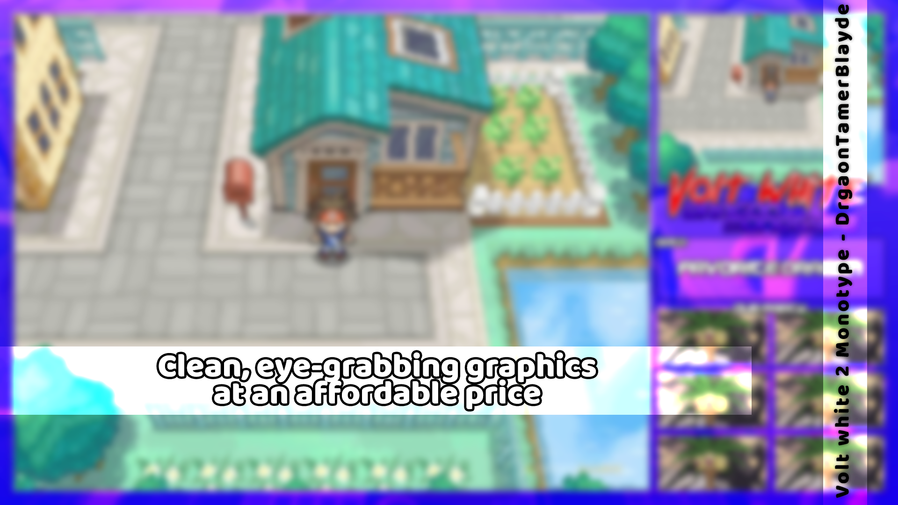

You only have one shot to make a great first impression on new viewers, and you need to make it count! Vibrant video overlays, eye catching thumbnails, and consistent quality branding are all crucial to the first impressions of first time viewers.
With my graphics, I assure you that first impressions of your content, on any platform is a priority. One of my goals as a graphic designer is to make sure first time viewers have a standout impression of you as a content creator, and this is something
that will always be important to me.  You only have one shot to make a great first impression on new viewers, and you need to make it count! Vibrant video overlays, eye catching thumbnails, and consistent quality branding are all crucial to the first impressions of first time viewers.
With my graphics, I assure you that first impressions of your content, on any platform is a priority. One of my goals as a graphic designer is to make sure first time viewers have a standout impression of you as a content creator, and this is something
that will always be important to me.